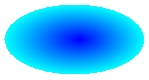
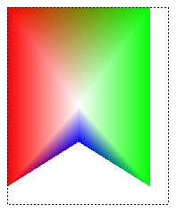
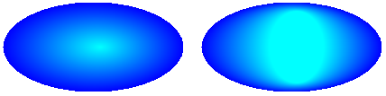
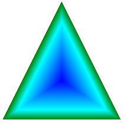
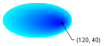
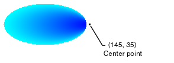

Практическое руководство. Создание градиента вдоль контура
PathGradientBrush Класс позволяет настраивать то, как вы постепенно изменение цвета заливки фигуры. Например можно указать один цвет для центра контура, а другой — для границы пути. Можно также определить отдельные цвета для каждой из нескольких точек на границе пути.
Note
В GDI+, путь представляет собой последовательность линий и кривых, поддерживаемых GraphicsPath объекта. Дополнительные сведения о GDI+ пути, см. в разделе контуры в GDI + и Constructing и рисование контуров.
Заливка эллипса с градиента вдоль контура
В следующем примере заполняется эллипса с кисти градиента контура. Имеет значение центрального цвета на синем и граничным цветом — зеленовато-голубой. На следующем рисунке заполненного эллипса.

По умолчанию кисти градиента контура не распространяется за пределами границы пути. При использовании пути градиентной кисти для заливки фигуры, которая выходит за пределы границ пути области экрана за пределами контура заполняться не будет.
На следующем рисунке показано, что происходит при изменении FillEllipse вызов в следующий код, чтобы
e.Graphics.FillRectangle(pthGrBrush, 0, 10, 200, 40):// Create a path that consists of a single ellipse. GraphicsPath path = new GraphicsPath(); path.AddEllipse(0, 0, 140, 70); // Use the path to construct a brush. PathGradientBrush pthGrBrush = new PathGradientBrush(path); // Set the color at the center of the path to blue. pthGrBrush.CenterColor = Color.FromArgb(255, 0, 0, 255); // Set the color along the entire boundary // of the path to aqua. Color[] colors = { Color.FromArgb(255, 0, 255, 255) }; pthGrBrush.SurroundColors = colors; e.Graphics.FillEllipse(pthGrBrush, 0, 0, 140, 70);Предыдущий пример кода предназначен для работы с Windows Forms и требует PaintEventArgs e, который является параметром из PaintEventHandler.
Указание точек на границе
В следующем примере создается градиентной кисти путь из пути форме четырехконечной звезды. В коде устанавливается CenterColor свойство, которое задает цвет в центре звезды как красный. Затем устанавливается SurroundColors свойство, чтобы указать различные цвета (хранящиеся в
colorsмассива) отдельных точек вpointsмассива. Последняя инструкция кода заливку пути в форме звезды с помощью кисти градиента контура.// Put the points of a polygon in an array. Point[] points = { new Point(75, 0), new Point(100, 50), new Point(150, 50), new Point(112, 75), new Point(150, 150), new Point(75, 100), new Point(0, 150), new Point(37, 75), new Point(0, 50), new Point(50, 50)}; // Use the array of points to construct a path. GraphicsPath path = new GraphicsPath(); path.AddLines(points); // Use the path to construct a path gradient brush. PathGradientBrush pthGrBrush = new PathGradientBrush(path); // Set the color at the center of the path to red. pthGrBrush.CenterColor = Color.FromArgb(255, 255, 0, 0); // Set the colors of the points in the array. Color[] colors = { Color.FromArgb(255, 0, 0, 0), Color.FromArgb(255, 0, 255, 0), Color.FromArgb(255, 0, 0, 255), Color.FromArgb(255, 255, 255, 255), Color.FromArgb(255, 0, 0, 0), Color.FromArgb(255, 0, 255, 0), Color.FromArgb(255, 0, 0, 255), Color.FromArgb(255, 255, 255, 255), Color.FromArgb(255, 0, 0, 0), Color.FromArgb(255, 0, 255, 0)}; pthGrBrush.SurroundColors = colors; // Fill the path with the path gradient brush. e.Graphics.FillPath(pthGrBrush, path);В следующем примере рисуется градиента вдоль контура без GraphicsPath в коде. Конкретного PathGradientBrush конструктор в примере, получает массив точек, но не требует GraphicsPath объекта. Кроме того, обратите внимание, что PathGradientBrush используется для заливки прямоугольника, а не путь. Прямоугольник больше, чем замкнутый контур, используемый для задания кисти, поэтому часть прямоугольника не закрашивается кистью. Ниже показан прямоугольник (пунктирная линия) и часть прямоугольника, созданный при помощи кисти градиента контура:

// Construct a path gradient brush based on an array of points. PointF[] ptsF = { new PointF(0, 0), new PointF(160, 0), new PointF(160, 200), new PointF(80, 150), new PointF(0, 200)}; PathGradientBrush pBrush = new PathGradientBrush(ptsF); // An array of five points was used to construct the path gradient // brush. Set the color of each point in that array. Color[] colors = { Color.FromArgb(255, 255, 0, 0), // (0, 0) red Color.FromArgb(255, 0, 255, 0), // (160, 0) green Color.FromArgb(255, 0, 255, 0), // (160, 200) green Color.FromArgb(255, 0, 0, 255), // (80, 150) blue Color.FromArgb(255, 255, 0, 0)}; // (0, 200) red pBrush.SurroundColors = colors; // Set the center color to white. pBrush.CenterColor = Color.White; // Use the path gradient brush to fill a rectangle. e.Graphics.FillRectangle(pBrush, new Rectangle(0, 0, 160, 200));
Чтобы настроить градиента вдоль контура
Одним из способов настройки кисти градиента контура является установка его FocusScales свойство. Это свойство определяет внутренний путь, расположенную внутри главный путь. Центрального цвета везде в пределах этого внутреннего пути, а не только в центральной точке.
В следующем примере создается на основе эллиптической пути кисти градиента контура. Код задает в качестве цвета границы на синий, устанавливает центрального цвета на голубой и затем использует путь градиентной кисти для заливки по контуру.
Затем код задает коэффициенты масштабирования кисти градиента контура. Коэффициент масштабирования по x имеет значение 0.3 и масштабирования по оси y имеет значение 0,8. Этот код вызывает TranslateTransform метод Graphics объекта таким образом, последующий вызов FillPath осуществляется заливка эллипса, который находится справа от первого эллипса.
Чтобы увидеть эффект коэффициенты масштабирования, представьте себе небольшой эллипса, который совпадает с основной эллипс центром. Небольшой (внутренний) эллипс представляет собой основной эллипс, вдвое 0.3 и по вертикали с коэффициентом 0,8 горизонтально масштабировать (относительно ее центра). При перемещении от границы внешнего эллипса к границе внутреннего эллипса цвет плавно меняется от синего на голубой. При перемещении от границы внутреннего эллипса к общему центру зеленовато-голубой цвет сохраняется.
На рисунке ниже показан результат выполнения кода. Эллипс в левой части — голубой цвет только в центральной точки. Эллипс в правой — голубой везде в пределах внутреннего пути.

// Create a path that consists of a single ellipse.
GraphicsPath path = new GraphicsPath();
path.AddEllipse(0, 0, 200, 100);
// Create a path gradient brush based on the elliptical path.
PathGradientBrush pthGrBrush = new PathGradientBrush(path);
// Set the color along the entire boundary to blue.
Color[] color = { Color.Blue };
pthGrBrush.SurroundColors = color;
// Set the center color to aqua.
pthGrBrush.CenterColor = Color.Aqua;
// Use the path gradient brush to fill the ellipse.
e.Graphics.FillPath(pthGrBrush, path);
// Set the focus scales for the path gradient brush.
pthGrBrush.FocusScales = new PointF(0.3f, 0.8f);
// Use the path gradient brush to fill the ellipse again.
// Show this filled ellipse to the right of the first filled ellipse.
e.Graphics.TranslateTransform(220.0f, 0.0f);
e.Graphics.FillPath(pthGrBrush, path);
Настройка с интерполяцией
Чтобы указать массив интерполяции цветов и позиций интерполяции является другим способом настройки кисти градиента контура.
В следующем примере создается исходя треугольником кисти градиента контура. В коде устанавливается InterpolationColors свойство кисти градиента контура, чтобы указать массив цветов интерполяции (темно-зеленый, голубой, синий), а также массив позиций интерполяции (0, 0,25, 1). При перемещении от границы треугольника к центральной точке цвет плавно меняется от темно-зеленый голубой, а затем из голубой цвет на синий. Изменение темно-зеленого цвета на голубой происходит на 25 процентов от расстояния от темно-зеленого до синего.
Ниже показан треугольник, заполненный градиентной кисти пользовательский путь.

// Vertices of the outer triangle Point[] points = { new Point(100, 0), new Point(200, 200), new Point(0, 200)}; // No GraphicsPath object is created. The PathGradientBrush // object is constructed directly from the array of points. PathGradientBrush pthGrBrush = new PathGradientBrush(points); Color[] colors = { Color.FromArgb(255, 0, 128, 0), // dark green Color.FromArgb(255, 0, 255, 255), // aqua Color.FromArgb(255, 0, 0, 255)}; // blue float[] relativePositions = { 0f, // Dark green is at the boundary of the triangle. 0.4f, // Aqua is 40 percent of the way from the boundary // to the center point. 1.0f}; // Blue is at the center point. ColorBlend colorBlend = new ColorBlend(); colorBlend.Colors = colors; colorBlend.Positions = relativePositions; pthGrBrush.InterpolationColors = colorBlend; // Fill a rectangle that is larger than the triangle // specified in the Point array. The portion of the // rectangle outside the triangle will not be painted. e.Graphics.FillRectangle(pthGrBrush, 0, 0, 200, 200);
Чтобы задать точку center
По умолчанию центральная точка градиентной кисти путь находится в центре путь, используемый для создания кисти. Можно изменить расположение точки center, задав CenterPoint свойство PathGradientBrush класса.
В следующем примере создается на основе эллиптического кисти градиента контура. Центром эллипса является точка (70, 35), но центральную точку градиента кисти путь имеет значение (120, 40).
// Create a path that consists of a single ellipse. GraphicsPath path = new GraphicsPath(); path.AddEllipse(0, 0, 140, 70); // Use the path to construct a brush. PathGradientBrush pthGrBrush = new PathGradientBrush(path); // Set the center point to a location that is not // the centroid of the path. pthGrBrush.CenterPoint = new PointF(120, 40); // Set the color at the center of the path to blue. pthGrBrush.CenterColor = Color.FromArgb(255, 0, 0, 255); // Set the color along the entire boundary // of the path to aqua. Color[] colors = { Color.FromArgb(255, 0, 255, 255) }; pthGrBrush.SurroundColors = colors; e.Graphics.FillEllipse(pthGrBrush, 0, 0, 140, 70);Ниже показан закрашенный эллипс и центральную точку градиента кисти пути:

Можно задать центральную точку градиента кисти путь в расположение вне пути, который использовался для создания кисти. В следующем примере заменяется вызов для установки CenterPoint свойство в приведенном выше коде.
pthGrBrush.CenterPoint = new PointF(145, 35);На следующем рисунке показан выходные данные этого изменения:

В приведенном выше рисунке в крайней правой точки эллипса не являются чисто синими (несмотря на то, что они очень близки). Цвета градиента располагаются так, как если бы заливки достиг точки (145, 35), где цвет является чисто синим (0, 0, 255). Никогда не дойти до точки (145, 35), так как путь Градиентная кисть закрашивает только в пределах заданного пути.
Компиляция кода
Предыдущий пример предназначен для работы с Windows Forms, и они требуют PaintEventArgs e, который является параметром Paint обработчик событий.